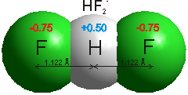
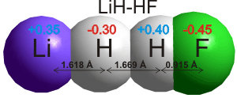

Hydrogen-bonding occurs when relatively strong forces attract an atom of hydrogen to two (groups of) atoms instead of only one, such that it acts as a bond between them.
'The hydrogen bond is an attractive interaction between a hydrogen atom from a molecule or a molecular
fragment X–H in which X is more electronegative than H, and an atom or a group of atoms in the same
or a different molecule, in which there is evidence of bond formation. '

Hydrogen bonds b are medium strength attractive intermolecular or intra-molecular forces. Hydrogen-bonding [1950, 2458] occurs when relatively strong forces attract an atom of hydrogen to two (groups of) atoms instead of only one, such that it acts as a bond between them. [99]. If weak, they appear as electrostatic interactions, whereas if stronger, they have partial to greater covalent character [4207]. They are dynamic (flickering) bonds, usually breaking on a picosecond time-scale but reforming before the atoms move apart. Typically, hydrogen bonding occurs where the partially positively charged hydrogen atom lies between partially negatively charged oxygen or nitrogen atoms. They are also found elsewhere, such as between fluorine atoms in HF2− (a very strong hydrogen bond at 163 kJ ˣ mol−1, see above right [4207]), between water and the smaller halide ions F−, Cl− and Br− (for example, HO-H····Br−, [178, 1190, 3250] or an electron-rich region like aromatic π-electron system. a With the halides, the strength of hydrogen-bonding reduces as the halide radius increases, with the F−····H-OH hydrogen bond much shorter (153 pm) and straighter (171.5°) than that for Cl····H-OH (242 pm, 155.9°) [3333]. Iodide hydrogen bonds to a much smaller extent [190], and even xenon [941] forms a very weak hydrogen bond (2 kJ ˣ mol−1). Even very weak C-H····OH2 hydrogen bonds (≈ 4 kJ ˣ mol−1), C-H····O, and C-H····π are being increasingly recognized [1293]. C-H····O hydrogen bonding has been found between axial C-H protons and -O-H groups in D‐glucopyranose and D‐galactopyranose. Although energetically small, they are mainly covalent [3445].
Hydrogen bonds take part in reactions involving the movement of protons. In theoretical studies, strong hydrogen bonds even occur to the hydrogen atoms in metal hydrides (for example, LiH····HF; see right [217] and borohydride BH4−····H-OH [3865], although the borohydride hydrogen bonds are weaker than water-water hydrogen bonds). The current view of the hydrogen bond has been reviewed [1462], and comparison to halogen bonds (i.e., C-X····Z; X = Cl, Br, I; Z = O, N, S), C-H····π interactions, and C-Br····π interactions made [2248].
BH4−····H-OH
calculated using the Restricted Hartree-Fock
wave function (RHF) using the 6-31G** basis set.
An exactly solvable Schrödinger equation with double-well potential has been proposed for the hydrogen bond [2940]. Due to the range in hydrogen-bonding that is now accepted, a more straightforward definition of the hydrogen bond has been suggested as "a hydrogen bond is a weak chemical bond between a valence-saturated XH group of one molecule and a valence-saturated Y atom in the same or a different molecule" [3096].
Hydrogen bond strength is given by the weaker of the two interactions of the flanking atoms with the central hydrogen atom and is strongest when these interactions are equal [1653]. They are now thought to be dynamic bonds with continuity of electron density and present where the 'bonding' is directed [2381]. Only the covalent component of the hydrogen bond is directional [3096]. Hydrogen bond strength may be estimated theoretically from the quantum theory of atoms in molecules [2191]. Hydrogen-bonding is characterized by its preferred dimensions, molecular orientation, approximate linearity and infrared frequency and intensity changes. Hydrogen bond distances are dynamic with substantial zero-point energy and vibration even at absolute zero (0 K). Hydrogen bonds are not atom-pair functions and depend not only on the neighboring atoms but also upon the sequential nature of the total bonding pattern.
(DMSO)2H+ ions using a short hydrogen bond

Short hydrogen bonds (0.244 nm, each O-H 0.122 nm) are found between dimethylsulfoxide (DMSO) molecules joined by a proton in crystals (see right; in this case, hydrogen bis(dimethylsulfoxide) diammine-tetrakis (isothiocyanato)-chromiumIII). This symmetrical hydrogen bond was found to be short (0.246 nm, O-H's 0.102 nm and 0.145 nm) but asymmetrical by ab initio calculation using the Restricted Hartree-Fock wave function (RHF) using the 6-31G** basis set.
There are noncovalent interactions related to hydrogen bonds, typically referred to as halogen, chalcogen, pnictogen, and tetrel bonds, depending upon the identity of the substitute bridging atom; halogen bridging are group 17 elements I, Br, and Cl; chalcogen bridging are group 16 elements Te, Se, and S; pnictogen bridging are group 15 elements Sb, As, P, and N; tetrel bridging are group 14 elements C, Si, Ge, Sn, and Pb [3937].
NMR spectroscopy is one of the most valuable methods for experimentally characterizing H-bond interactions in biological systems [3347]. As they demonstrate information transfer between hydrogen-bonded nuclei, they provide strong evidence for their partial covalent character. The 1H-shielding values of the hydrogen-bond protons are determined by the depletion of electronic density around the bonding hydrogen atom, which stems from the hydrogen-bond formation. Using a valence bond theory-based method, it has been shown that charge-transfer structures account for a significant proportion of the hydrogen bond energy in a variety of hydrogen-bonded systems, thus indicating a dominant role for covalency [3423]. Electrostatic effects were found to play a lesser role than that commonly apportioned.
Energy profiles for different forms of the hydrogen bond
Hydrogen bonds form the most critical stabilizing interaction in nature, being important in the secondary and tertiary structure of proteins, the structure of DNA and membranes, and the controlling forces of hydration. Networks of hydrogen bonds show cooperativity, with stronger interactions than expected from pairwise additivity. The hydrogen atoms in hydrogen bonds can be associated with one of the electronegative atoms (see the left example given on the right), Equally associated with both electronegative atoms (see the central example given on the right) or centrally associated with both electronegative atoms (see the right example given on the right). The example uses oxygen atoms, and the three hydrogen-bonded forms depend on the distance between the electronegative oxygen atoms.
Hydrogen-bonding H····A distances are less than van der Waals distances but greater than the length of covalent bonds or ionic pair separations. Hydrogen bonds are different from van der Waals dispersion interactions, but this difference is blurred in some instances. The key to the difference is that hydrogen bonding usually involves a partial covalent bond formation and mutual penetration of atoms within their van der Waals radii. The IUPAC definition is given above [1702]. The most important criteria for a hydrogen bond are: (i) the H in the X–H group is more electropositive than X, and (ii) the physical forces involved in hydrogen bonding should include attractive electrostatic forces, i.e., it should not be primarily dispersive forces [1461]. In 2015, it was suggested that the definition be broadened somewhat [2381] to include its dynamic nature, such that hydrogen bonds may form due to molecular vibrations and not necessarily within the structural potential energy minimum. The strength of the attraction (bond) between the electronegative atoms (e.g., O····O is (experimentally) the same as the strength between the included hydrogen atom and the furthest electronegative atom (e.g., O-H····O). In this text, both such 'bonds' are called 'hydrogen bonds'. Using first-principle density functional theory simulations, the overall attraction between the molecular species may be split into separate O····O and O-H····O attractions [2510].
Hydrogen bonds allow the transfer of protons between the bonded electronegative atoms, such as
H-O-H····OH2 = HO− ····H-+OH2
The van der Waals dispersive attraction (see below) in water has been estimated as high as about 5.5 kJ ˣ mol−1 [548] based on isoelectronic molecules at optimal separation,. However, it iis likely to be repulsive within a hydrogen bond due to the close contact (see, for example, [736]). Separating the hydrogen bond components, as below, helps our understanding, although these components are combined, in reality.
Attraction/repulsion |
|
|---|---|
++ electrostatic
attraction |
long-range interaction (< 30 Å) based on point charges, or dipoles plus quadrupoles, and so on. They may be considered as varying with distance−1. |
++ covalency
attraction |
highly directional [3096], and increases on hydrogen-bonded cyclic cluster formation. It is very dependent on the spatial arrangement of the molecules within the local environment (< 6 Å). Hydrogen bonds in many molecules, such as DNA, certainly possess considerable covalent character [1867]. |
++ polarization
attraction |
due to net attractive effects between charges and electron clouds (< 8 Å), which may increase cooperatively dependent on the local environment. They may be considered as varying with distance−4. This net attractive effect may contain a small repulsive element due to slightly increased electron cloud overlap. |
+ dispersive
attraction |
interaction (< 6 Å) due to the combined and coordinated effects of neighboring electron clouds. They may be considered as varying with distance−6. |
-- electron
repulsion |
very short-range interaction (< 4 Å) due to electron cloud overlap. They may be considered as varying with distance−12. This keeps the electronegative atoms apart with very high pressures required to bring them closer. Without the attractive elements of the hydrogen bond, the O atoms of neighboring water molecules would be kept about 3.2 - 3.4 Å apart. |
High electronegativity/low polarization may may have similar effects to high polarization/low electronegativity as has been shown in the Group 16 elements O, S, Se, Te, and Po [4472]. These atoms have diminishing electronegativity but increasing polarization. The strength of the X–H····Po hydrogen bond lies in the range of 10–30 kJ ˣ mol−1, which is comparable to that of conventional hydrogen bonds such as O–H····O.
Others have separated the hydrogen bond energy components in different ways. For example, [3718] (reviewed in [3719]) described seven interactions: (1) attractive and repulsive electrostatic interactions, (2) orbital interactions, (3) p-resonance assistance such as in Adenine-Thymine and Guanine-Cytosine base pairs, (4) cooperative effects such as in formamide chains, (5) steric repulsion, (6) dispersion interactions, and (7) secondary electrostatic interactions. Components (2), (3), and (4) are essentially subcomponents of the covalency attraction.
The strength of hydrogen bonds (X-H····Y) depends on the donor (donating the hydrogen atom; X) and acceptor (accepting that hydrogen atom; Y) atoms [2511]; the stronger the electron-donating power (i.e., the acceptor, the base), the stronger the hydrogen bond, e.g.,
(CH3)3N: > (CH3)2HN: >(CH3)H2N: > H3N:
Also, the stronger the proton donor (the acid), the stronger the hydrogen bond, unless the proton is 100% donated onto the base when the roles of donor and acceptor are reversed (X− ····H-+Y ). Most hydrogen bonds have binding energy in the range 8–80 kJ ˣ mol−1. In similar structures, the donor order is O-H > N-H >> C-H, and the acceptor order is N > 0 > S; thus,
O−H····N > O−H····O > N−H····N > N−H····O >> C-H····O
although there are exceptions to this, due to the neighboring bonding.
The relation between OH stretching frequency and r(O···O) distance'
Hydrogen bond data (O-H···O ) from crystalline materials shows a correlation between the covalent v(O-H) frequency and the r(O···O) distances between the hydrogen-bonded oxygen atoms, r(O···O), (see dashed graph right, [3095]) Recent results, using purified materials and with the spectra assigned using deuteration, have cast doubt on the original line for strong hydrogen bonds [3096] (a = KH(C6H5CH2COO)2, strong hydrogen bonds; b = C6H5CO2H, intermediate strength hydrogen bonds; c = MgSO4.6H2O, weaker hydrogen bonds). Strong hydrogen bonds tend towards the hydrogen atom being symmetrically placed between the oxygen atoms. Thus, its vibration becomes strongly affected by its links to both oxygen atoms.
The v(N-H) frequencies are not good indicators of the strength of the N-H···O hydrogen bond as the nitrogen atom may change its charged state [3096].
In an X-H···Y hydrogen bond, there is characteristic proton deshielding of the central H atom and spin-spin couplings between X and Y.
In conclusion, hydrogen bonds (1) have direction, (2) generally are weak compared with fully covalent bonds but strong compared with thermal energies, and (3) allow proton transfer between atoms.
[Back to Top  ]
]
A typical van der Waals interaction between two non-bonded atoms
All atoms repel each other at close range due to the nuclear-nuclear Coulomb interactions but attract each other at a less close range due to the electronic interactions with the nuclei. These attractive forces are known as 'van der Waals forces' (named after Dutch scientist Johannes Diderik van der Waals b). They are much weaker than covalent bonds, ionic interactions. Most hydrogen bonds and thermal motions may disrupt them. They are caused by correlations in the fluctuating electronic polarization of the atoms/molecules. They depend on their relative orientation but have no directional characteristic. The van der Waals interaction potential depends on ≈ r−6, where r is the distance between the centers of the atoms, or ≈ L−2, where L is the distance between planar surfaces. Thus, they are short-range forces and disappear rapidly with distance. They vary little with temperature. The powerful short-range repulsive force, varying ≈ r−12, sets the minimum distance to be found between atoms due to the mutual repulsion of the nuclei. Although an individual van der Waals interaction is small, some circumstances bring together many additive interactions, such as on the central molecule within a clathrate cavity or between macromolecules.
[Back to Top  ]
]
a Hydrogen-bonding is often represented by the use of a dotted line ····. [Back]
b Two types of hydrogen bonds are now classified, red-shifted and blue-shifted. The commonly-encountered hydrogen bond has a lengthened and weakened covalent bond and a lower red-shifted stretching vibrational frequency. In comparison, the blue-shifted hydrogen bond has a shortened and strengthened covalent bond and a higher stretching vibrational frequency. [Back]
c J. D. van der Waal, On the continuity of the gaseous and liquid states. Leiden: Universiteit Leiden; 1873; J. D. van der Waal, On the continuity of the gaseous and liquid states, Ed J. S. Rowlinson, Dover Publications, Inc. 2004. [Back]
Home | Site Index | Water hydrogen bonds (1) | Water hydrogen bonds (2) | The water molecule | Ices | LSBU | Top
This page was established in 2016 and last updated by Martin Chaplin on 19 July, 2022